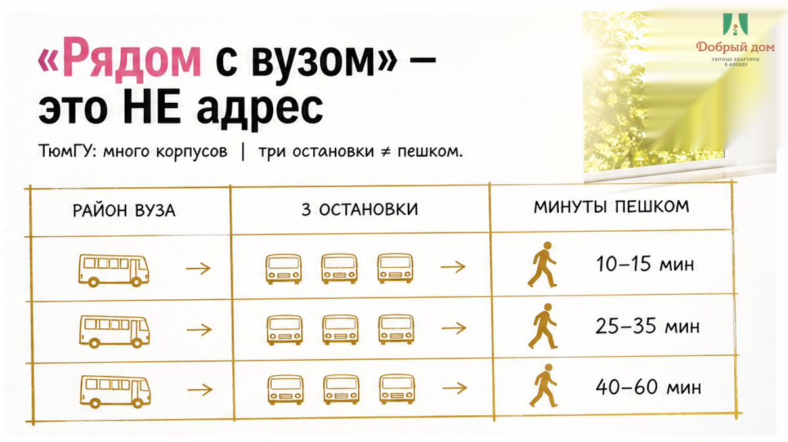
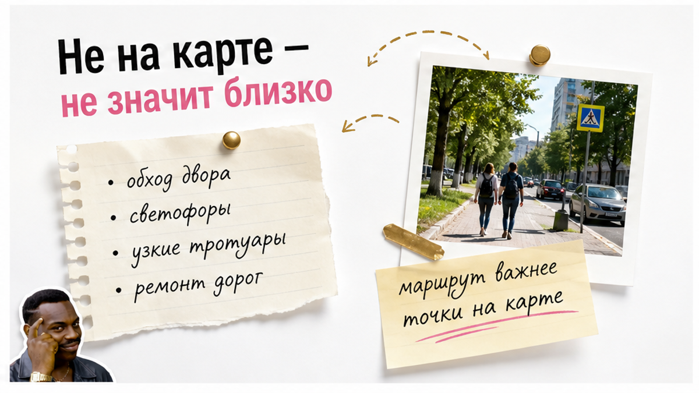
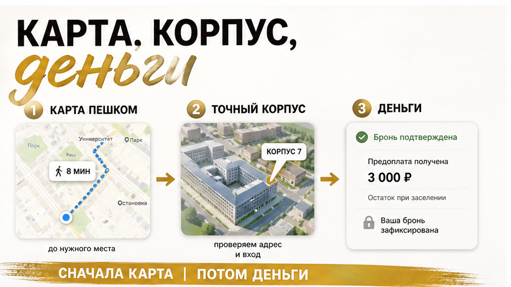

27 августа, 19:20, Тюмень. Отец держит чемодан, мать — папку с оригиналами, сын смотрит в телефон. Завтра в девять утра ему нужно в корпус: сдать документы, получить список того, что ещё донести. Квартиру на три ночи родители забронировали неделю назад — в объявлении было написано «рядом с вузом». Уже на тротуаре сын разворачивает карту к отцу: до нужной двери сорок минут пешком. Не десять минут от подъезда, не «вышли и дошли», а сорок. В одну сторону. С папкой, в незнакомом городе, утром первого большого дня.
Мать сказала: «Так тут же написано — рядом с университетом». Написано. И это даже не обман. Квартира действительно была рядом с одним из корпусов ТюмГУ. Только сыну утром нужен был другой. А у семьи уже три ночи оплачены, в квартире надо заселиться не раньше 14:00, а утром — решать, куда деть вещи, как успеть к девяти и почему слово «рядом» вдруг стало стоить полутора часов дня.
Я хост посуточной в Тюмени. Это «Добрый дом». Каждый август к нам приезжают родители с будущими студентами: на две, три, четыре ночи — оформить документы, разобраться с общежитием, пройтись по городу. Если удобнее спрашивать в мессенджере, я есть в Telegram и MAX. Но сначала — про ту самую фразу, которая ломает первое утро ещё до заселения.

Вы читаете объявление и сами дорисовываете привычную картинку: подъезд, перекрёсток, десять минут пешком — и сын у входа. В голове всё уже сложилось. Можно брать билеты, собирать папку, бронировать квартиру. Но у человека, который написал «рядом с вузом», в голове может быть совсем другая картинка: район, остановка или один корпус из нескольких.
У ТюмГУ нет одной двери, в которую приезжают все. Володарского, 6; Ленина, 16, 23 и 38; Семакова, 18; Пржевальского, 37/1; 8 Марта, 2; учебно-лабораторный корпус № 1 на Республики, 9 — всё это ТюмГУ. Для объявления достаточно сказать «рядом с университетом». Для вашей семьи этого недостаточно: завтра нужен не университет вообще, а конкретная улица и конкретный дом.
Вечером хозяин той квартиры ответил спокойно: «Я вас не обманывала, тут до университета три остановки». Не соврала. Три остановки действительно могут быть маршрутом до университета. Но три остановки — это транспорт, а не пешая доступность. В этой фразе вообще не спрятано, сколько идти ногами до корпуса, куда сыну надо к девяти. Иллюзия была не в прямой лжи, а в том, что одна и та же фраза у хозяина и у родителей означала разное.

Сорок минут пешком сами по себе не катастрофа. В обычный день можно пройтись, посмотреть город, купить кофе по дороге. Но 1 сентября и последние дни августа — не обычный день. Вы только приехали, не знаете дворов, не понимаете, где вход, где остановка, куда поставить чемодан и во сколько реально откроется нужная дверь.
К этим сорока минутам прибавляются пять минут на подъезд и лифт, десять — на то, чтобы не свернуть не туда в незнакомом квартале. Потом этот путь надо пройти обратно. И вот уже не «неудачно выбрали квартиру», а вычеркнули из дня примерно полтора часа. А в этот же день могут быть общежитие, копии документов, магазины, еда, звонки родным и попытка просто выдохнуть после дороги.
Особенно неприятно это выглядит, когда поезд приходит утром. В городе часто встречается заезд с 14:00 и выезд до 12:00. Семья приезжает в семь, оформление в девять, а попасть в квартиру можно только после обеда. Чемоданы остаются с вами, ребёнок волнуется, родители раздражаются друг на друга — и всё это не потому, что кто-то плохой, а потому, что два простых вопроса не задали заранее.
Не спрашивайте: «Далеко ли до вуза?» На такой вопрос легко получить честное, но бесполезное «нет, недалеко». Не спрашивайте: «Там университет рядом?» Ответят про район, остановку или знакомый хозяину корпус.
Спросите так: «Сколько минут пешком до корпуса на такой-то улице?»
Это и есть вопрос-отмычка. В нём нельзя спрятаться за словом «рядом». Есть адрес квартиры, есть адрес корпуса, есть пеший маршрут и есть минуты. Если в ответ вам называют цифру — её можно открыть на карте и проверить. Если вместо неё приходит «да тут всё рядом», «три остановки», «центр же» или «студенты всегда снимают» — не спорьте. Просто стройте маршрут сами.
Откройте карту, поставьте точку квартиры и точку нужного корпуса. Выберите режим «пешком», не автомобиль и не общественный транспорт. Посмотрите минуты и метры. Это занимает меньше времени, чем переписка о том, красивый ли ремонт на фотографиях. А решает гораздо больше: успеет ли сын спокойно прийти к нужной двери или начнёт первое университетское утро с бега по чужому городу.
Вот вопрос, из-за которого в комментариях обычно спорят: вы бы перепроверяли маршрут, если хозяин уже написал «рядом с вузом», или это кажется недоверием к человеку? Напишите в MAX — отвечу без дежурного «всё зависит от ситуации».
Вторая часть этой истории всегда начинается одинаково: «Надо решать сегодня, желающих много». Перед учебным годом родители ищут быстро. В объявлении может быть низкая цена, свежий ремонт на фото, удобный район и обещание близости к вузу. Потом появляется просьба срочно перевести предоплату, потому что квартира «до вечера».
Сама по себе спешка ещё ничего не доказывает. В конце августа спрос действительно высокий. Но спешка очень удобна, когда вам не дают сделать главное: открыть карту, уточнить корпус, проверить время заезда, перечитать условия. Пока вы волнуетесь, что упустите вариант, слово «рядом» успевает заменить все факты.
Поисковая выдача может показывать ориентиры вроде «от 1,5 тыс.», но это не цена вашей брони на ваши даты. Конкретная цифра появляется в подтверждённой брони. Про то, как «всё включено» в переписке превращается в доплаты на месте, у нас уже был разбор — «Всё включено», сказал хозяин. Я уточнил итоговую сумму. Так же и с расстоянием: «рядом» не становится маршрутом, пока вы не увидели путь до нужной двери.
Если формат бронирования позволяет, не переводите деньги до просмотра и проверки условий. А если поезд утром, отдельно и письменно согласуйте заезд. Не рассчитывайте, что «как-нибудь пустят раньше»: у вас на руках не предположение, а билеты, документы и ребёнок, которому надо быть в корпусе в определённое время.

У этой истории один вывод, и он не про недоверие ко всем хозяевам. Он про порядок. Сначала вы узнаёте адрес корпуса. Потом берёте точный адрес квартиры. Потом строите пеший маршрут и смотрите минуты. Затем письменно сверяете даты, время заезда и выезда. И только после этого переходите к деньгам и ключу.
Не наоборот. Не красивое фото — потом предоплата — потом надежда, что «университет где-то рядом». Вы выбираете не просто квартиру на три ночи. Вы выбираете расстояние до двери, в которую вашему сыну нужно зайти завтра утром.
Та семья в итоге получила урок не про Тюмень и не про университет. Они поняли цену расплывчатой фразы: сорок минут в одну сторону, три ночи в уже выбранной квартире и нервное первое утро. Эту цену можно было не платить. Достаточно было спросить не про вуз, а про корпус.
Список короткий, но он спасает не от абстрактных проблем, а от конкретного утра с чемоданом, папкой оригиналов и сорока минутами до нужного корпуса.
Я не обещаю гостю «рядом с вузом», пока не знаю, куда именно ему нужно. Сначала спрашиваю корпус и адрес. Потом называю минуты пешком до этой точки. Если идти далеко — так и говорю. Родителям, приехавшим на несколько ночей с документами, честная цифра полезнее красивой формулировки.
Есть и другие мелочи, которые становятся большими именно в день приезда. Например, инструкция по заселению и адрес, который совпадает с нужной дверью. Об этом я писал в материале «Оплатил квартиру посуточно. Код прислали от чужой двери». А если хотите заранее понять, почему условия выезда и залог лучше обсуждать не на бегу, прочитайте «Снял квартиру посуточно. Залог не вернули — нашли скол на плите».
Если знаете корпус и даты, напишите их сразу — так разговор получится предметным, без обещаний «где-то рядом».
Telegram-канал: t.me/Dobriy_dom_72
Менеджер в Telegram: t.me/Dobriy_dom_Tyumen
MAX: max.ru/id660300569233_biz
Сайт: добрыйдом-72.рф
Бронирование: добрыйдом-72.рф/booking/
Телефон: +7 (993) 574-83-22